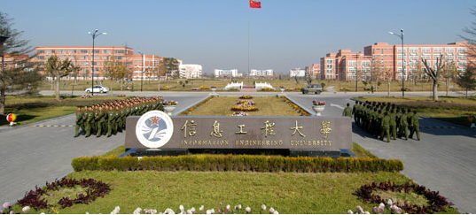
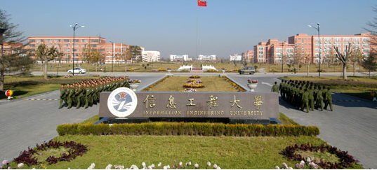

夏贝贝的个人主页
我的学校
中国人民解放军战略支援部队信息工程大学（Information Engineering University），以原信息工程大学、外国语学院为基础重建，隶属战略支援部队，主要为国防和军队现代化建设培养信息领域高层次人才，为军队2110工程重点建设院校。学校创建于1931年1月，前身是军委工程学校第二部、第三部和东北民主联军测绘学校；先后由原解放军信息工程学院、解放军测绘学院、解放军电子技术学院和解放军外国语学院合并组建而成。
中国人民解放军战略支援部队信息工程大学（Information Engineering University），以原信息工程大学、外国语学院为基础重建，隶属战略支援部队，主要为国防和军队现代化建设培养信息领域高层次人才，为军队2110工程重点建设院校。学校创建于1931年1月，前身是军委工程学校第二部、第三部和东北民主联军测绘学校；先后由原解放军信息工程学院、解放军测绘学院、解放军电子技术学院和解放军外国语学院合并组建而成。
